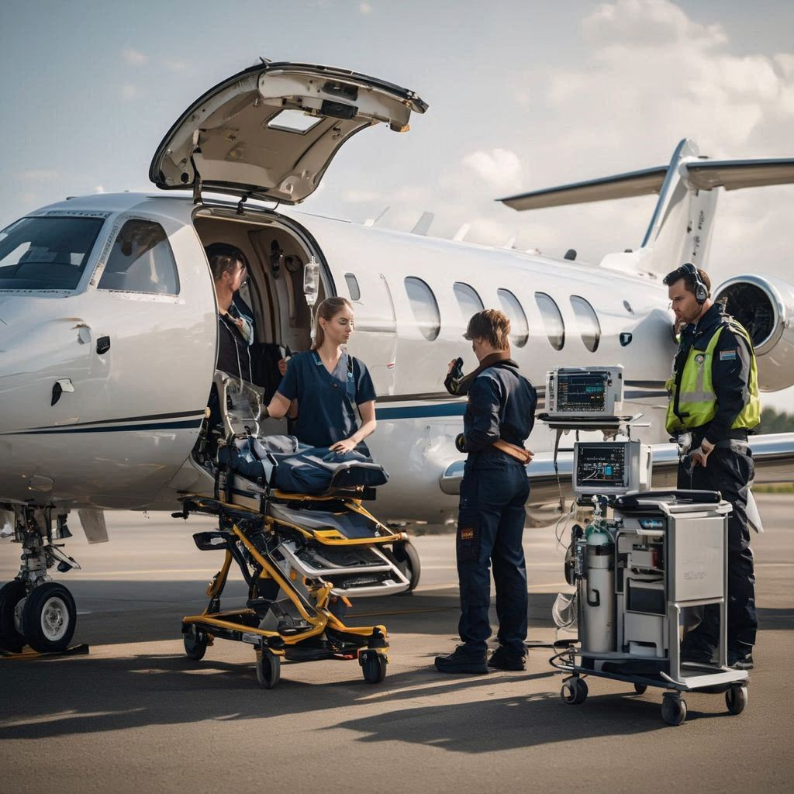
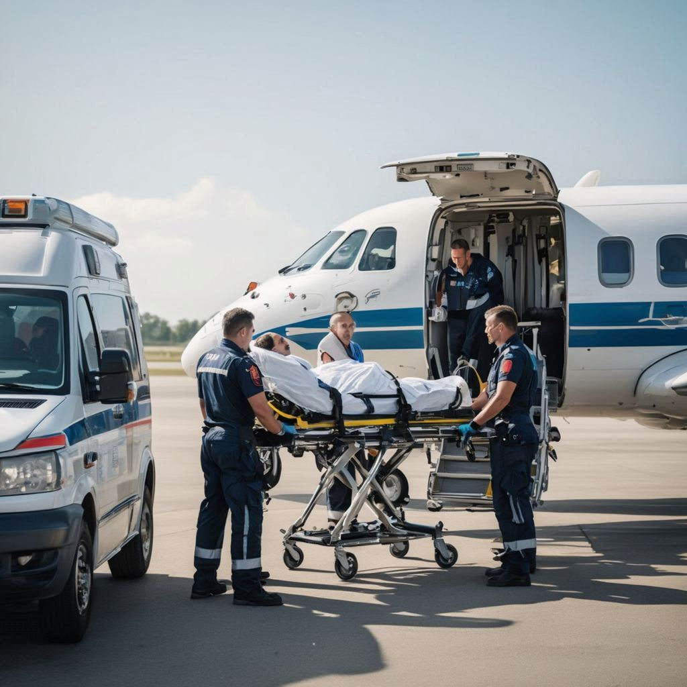
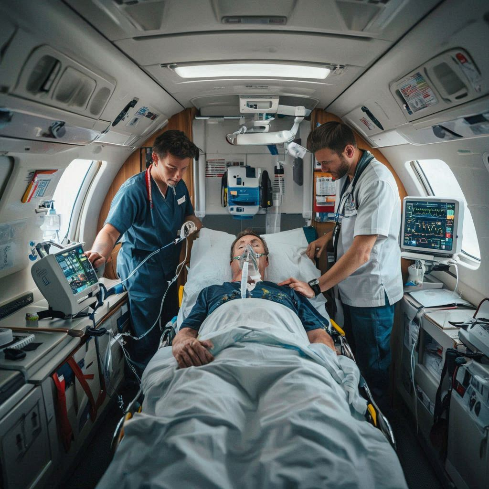

01
📞
Initial Call & Medical Review
We collect patient details, current condition, travel requirement, and destination information to assess the safest transfer plan.
SkyRescue offers medically supervised fixed wing air ambulance transfers for patients requiring safe, stable, and efficient long-distance transportation with advanced onboard care, experienced medical teams, and seamless coordination from departure to destination.
Designed for interstate, cross-country, and medically supervised long-distance patient movement.
Supports continuous monitoring, oxygen, ICU equipment, and trained medical escort teams throughout the journey.
Fixed wing air ambulances are specially configured aircraft used for transporting critically ill or injured patients over long distances with medical supervision and stable in-flight care. Compared to shorter-range transport options, they offer better suitability for extended journeys, controlled cabin conditions, and a smoother patient transfer experience.
At SkyRescue, fixed wing transfers are planned carefully from departure to destination, including patient assessment, aircraft readiness, medical staffing, airport coordination, and receiving hospital handover. This helps ensure safe continuity of care throughout the complete transfer process.

Fixed wing air ambulance transport is ideal when patients need medically supervised, stable, and efficient transfer over long distances. It supports critical care continuity, greater travel range, and better suitability for planned or urgent interstate and international movement.
A carefully coordinated workflow ensures safe long-distance transfer, continuous medical support, and smooth hospital handover.
We collect patient details, current condition, travel requirement, and destination information to assess the safest transfer plan.
The aircraft is arranged according to patient needs, with appropriate medical equipment, oxygen support, and trained escort personnel onboard.

Bed-to-bed movement is coordinated with ambulance support, airport handling, and medical supervision to ensure stable boarding and transition.

During the journey, the medical team continuously monitors the patient and manages essential care throughout the transfer.

Once landed, the patient is transferred safely to the receiving medical facility with proper coordination and complete care handover.
Fixed wing transfers are chosen when patients need medically supervised, long-distance transport with greater stability, advanced onboard support, and coordinated hospital-to-hospital movement.
Suitable for safely moving patients across distant cities and states under medical supervision.
Used when a patient requires oxygen, monitoring, ventilator support, or ICU-style care in transit.
Helpful when a patient must be transferred to a more advanced hospital in another city.
Appropriate for stable but monitored patients who still need supervised relocation after treatment.
Useful for cross-border patient movement where medical planning and supervised travel are required.
Chosen when long-distance movement must happen without delay while maintaining medical oversight.
Fixed wing transport combines medical stability, greater travel range, and coordinated transfer support, making it a dependable option for patients who need supervised care over extended distances.
Tap an icon to reveal details.
Suitable for interstate, cross-country, and international patient movement with planned medical support.
Aircraft can be arranged with oxygen, monitors, ventilator support, and other ICU-style essentials.
A more controlled cabin setup helps support patient comfort and safer physiological conditions during longer flights.
Experienced doctors, nurses, and paramedics can accompany the patient and manage care throughout the journey.
Transfer planning includes ambulance movement, airport handling, boarding logistics, and receiving hospital coordination.
Arrival and clinical handover are handled carefully so the patient is transitioned safely to the receiving medical facility.
Our team coordinates long-distance patient transfers with medical supervision, aircraft readiness, and bed-to-bed support for a smooth and dependable journey.